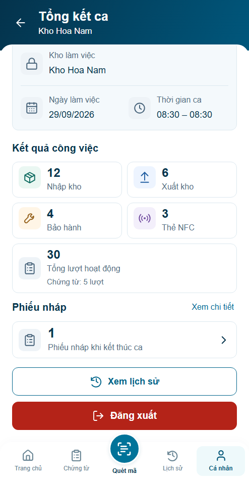
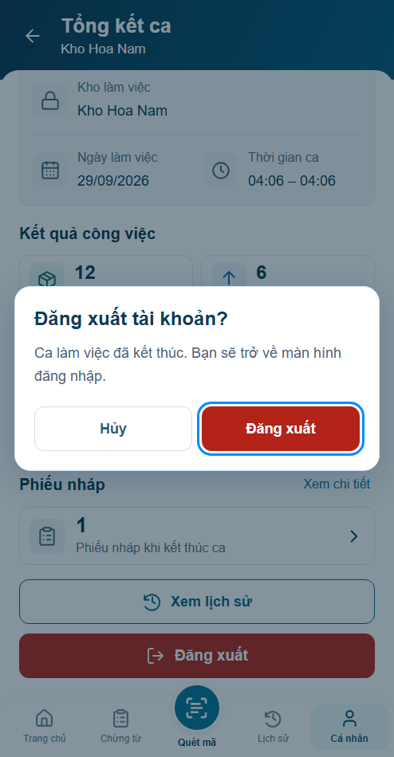

Trước · r04

Đăng xuất là hành động chính sau Tổng kết; lịch sử là nhánh kiểm tra. Chưa nghiệm thu visual/backend.
Báo cáo99Node/35nhóm browser · Bốn panel



Nháp phục hồi qua logout/login cùng trang preview, scope tài khoản/kho; reload/reset khôi phục fixture ban đầu. Không phải persistenceWMS.